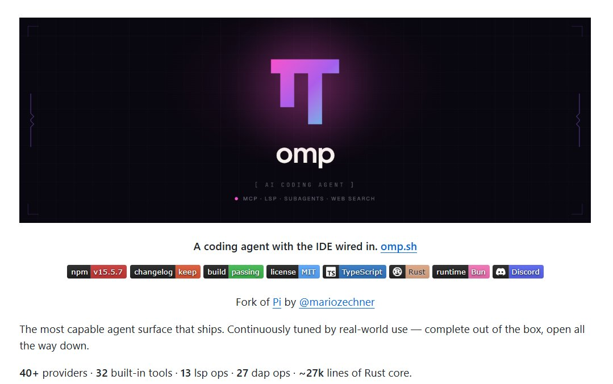
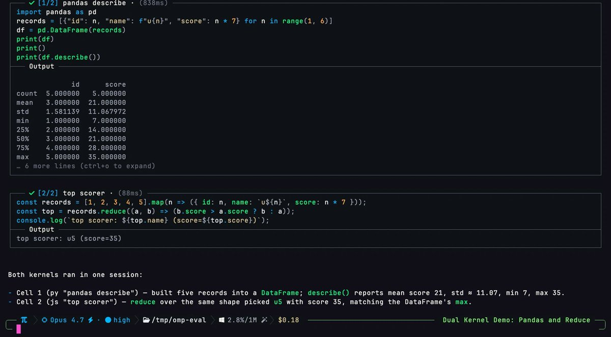
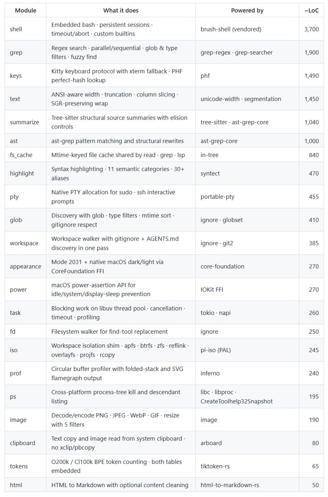
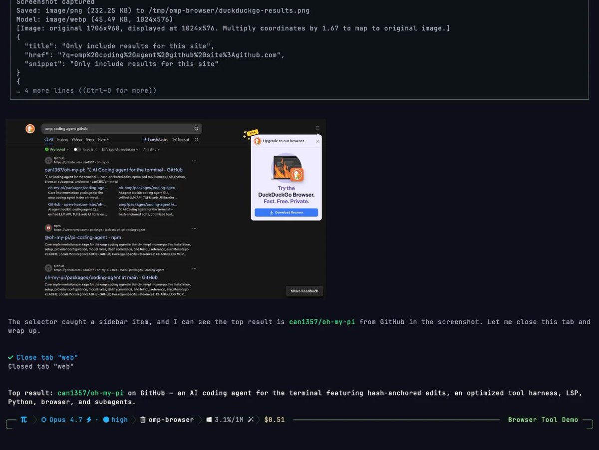

oh-my-pi：不是 ChatGPT 套壳，而是 IDE 内置的 AI 编程代理
这条帖子的核心不是“又一个聊天窗口”，而是把终端、IDE、调试器、浏览器、搜索和子任务 Agent 收进同一个命令行表面。它更像一个可操作的开发环境，而不是纯问答工具。
01 / 核心判断
oh-my-pi 的重点不是“把聊天做得更像 IDE”，而是把 写代码、看引用、跑调试器、拆分子任务、读网页/PR/PDF 这些动作统一到一个命令行代理里；它的产品形态更接近开发工作台，而不是对话壳。
先试顺序
- 先装：macOS / Linux 用
curl -fsSL https://omp.sh/install | sh；Windows 用 PowerShell 安装脚本。 - 先看入口：跑
omp completions，确认 CLI 自带补全和模型目录。 - 先跑能力：从
read、search、lsp三个最基础能力开始。 - 再上强能力：试
debugger、subagents、/review。
怎么读这张卡
这张卡按“高密度”组织：先给结论，再看四张图，再拆功能矩阵和适用边界。你不需要把它当成单一仓库说明，而要把它看成一套 端到端 AI 编程表面 的产品拆解。
命令行不是终点，是统一入口；后面连着 LSP、DAP、网页、PR、issue、PDF 和子 Agent。
它把“能聊”推进到“能做、可复现、可上线”。
如果你只想要一个聊天壳，它会显得过重；如果你要生产级工具链，它就更有意义。
02 / 四张图在说明什么




03 / 8 个硬点
1. 40+ 模型/服务商
说明它不是把某一个模型写死，而是把模型选择当成可切换的输入层。
2. 32 个内置工具
重点不在“工具很多”，而在“工具可直接被代理调用”。
3. LSP 知道 IDE 语义
引用、重命名、诊断不再只是搜索文本，而是接上语义级编辑能力。
4. Debugger 真接入
它不是叫你疯狂 print，而是让 agent 能附着到真实调试器里看状态。
5. Subagents 并行拆分
任务可拆给多个 Agent 同时跑，适合有并发、并行验证、分工检索的场景。
6. 可读网页 / GitHub / PDF / PR / Issue
把外部信息源当一等输入，而不是只能靠纯对话“猜”。
7. Windows 直接可用
不要求强依赖 WSL，说明它的跨平台工程化做得比较完整。
8. 继承现有规则
能读 Cursor、Cline、Codex、Claude、Windsurf 等工具已有规则，降低迁移成本。
04 / 仓库 README 再补三层证据
这句话比“AI 编程工具”更准确：它强调的是 IDE 已经接线，不是只给模型一个输入框。
安装入口明确
官网脚本、Bun、Windows PowerShell、mise pinned version 都给了，说明它对可安装性是认真处理的。
能力不是摆设
README 里直接列出 code execution、LSP、real debugger、first-class subagents、web/pdf/search，属于实打实的工具链。
原生平台思路
它强调 macOS / Linux / Windows 都能跑，不把 WSL 当唯一道路，产品思路偏原生。
结构更像系统，而不是 demo
模块、工具、规则、会话、补全、调试、评论、记忆都在同一框架下，说明其目标是完整操作面。
05 / 适合谁先看
- 做本地 AI 编程代理的人：它是一个高密度的能力参考，不只是风格参考。
- 要做 CLI / IDE / 调试器整合的人：LSP + DAP + 子 Agent 这条链特别值得看。
- 想做可迁移规则体系的人：现有工具的规则导入是很实用的工程点。
- 在意跨平台落地的人：Windows 支持意味着它不是只服务于某一个开发环境。
不适合直接当成什么
- 不是“对话式 ChatGPT 外壳”的简单升级。
- 不是只靠模型聪明就能完成任务的幻觉机。
- 也不是不用理解工具链就能无脑上手的产品。
06 / 原帖与仓库入口
建议同时打开这三个入口
先看原帖主张，再看 README 证据，再回到图像和模块拆解。
40+ 模型 + 32 工具 + LSP + DAP + 子 Agent，已经不是“聊天程序”维度。
它是在把 AI 编程从“对话”改造成“工作台”。